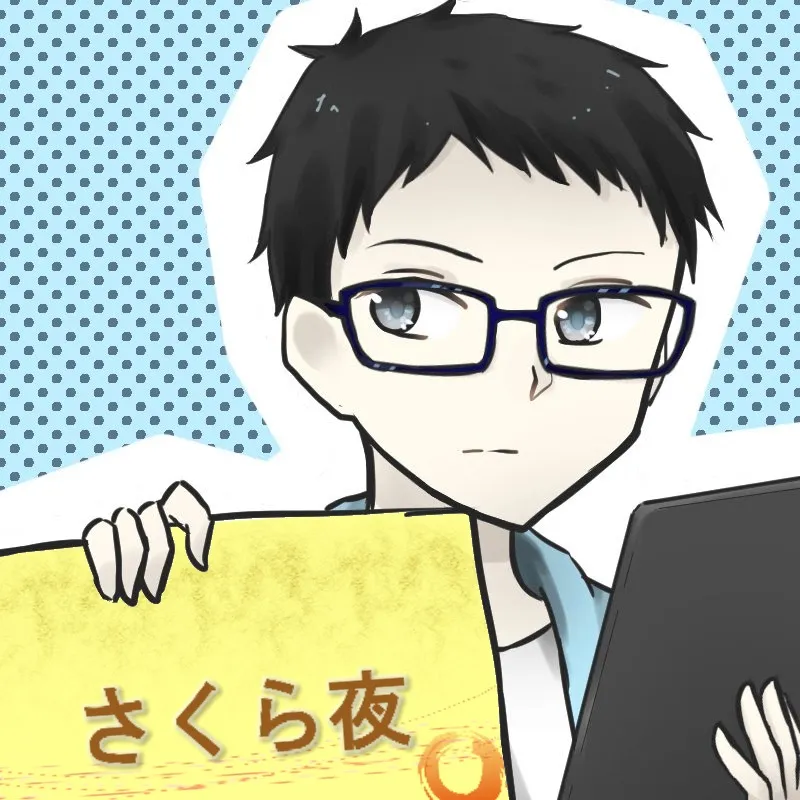

MyProfile

さくら夜
ガジェクラやってたり、ノベルゲーや
音ゲーをプレイしたり
してるネットワーク学科のゆるふわ
初心者な学生です。
MANICKERS
所属。
好きな作品
Accounts
さくら夜 | Twitter
GitHub | さくら夜
さくら夜 | deresute.me
所持機材について
メイン機材(普段使っている機材)
- SONY Xperia XZ1 Compat SO-02K
- Lenovo ThinkPad T480s(Windows 10 Pro 1903,RAM24GB,SSD1000GB)
- 富士通 ArrowsTab Q506/ME(Windows 10 Pro Education 1903)
- 富士通 ArrowsTab Q506/ME(Windows 10 Pro 1903)
- Apple iPhone 7(128GB,RoseGold)
- Apple iPad mini(2019,Wi-Fi,256GB,Space Gray)
MJ-25M/L-D(Windows10 Pro 1903,RAM16GB,SS240GB)YAMAHA RTX1200- Apple Apple Watch Series 3(Space Gray)
- Apple iMac 21.5 Late 2009(OSX 10.13.6,RAM8GB,HDD500GB)
サブ機材
- SHARP AQUOS ZETA SH-01H(SIMロック解除済み)
- Apple iPad mini 2(Wi-Fi,32GB,Silver)
- ASUS Nexus 7(2013,Wi-Fi,32GB,White)
- Amazon Kindle Fire HD8(2017,16GB)
- NEC LaVie L LL870/CS(Windows10 Pro 1803,RAM8GB,HDD1000GB)
売却予定機材
- HTC J HTL22(KDDI locked)
- マウスコンピュータ MADOSMA Q501HW
コレクション機材
- Sony Elicsson Xperia acro SO-02C
- NEC LaVie L LL770/FG(OSなし)
過去所持機材
- MacBook 2006(OS X v10.5 Leopard)